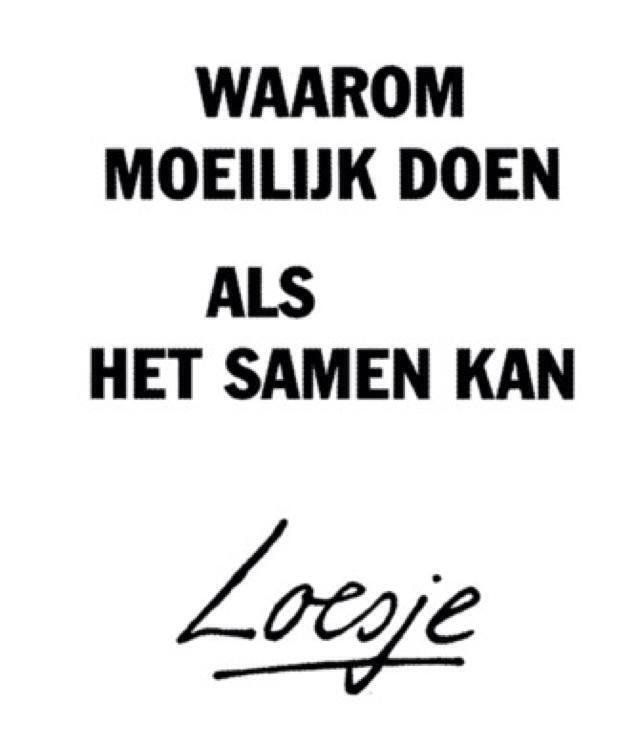

Dit is een site die een hulplijn aanbied waar je naar toe kan bellen als jij op enige manier bent misbruikt. Het doel van deze organisatie is het verbreken van de stilte. En dat mensen de stap nemen om er over te praten. https://www.verbreekdestilte.nl/
Dit is een site die meerdere hulpdiensten aanbied en adviezen geeft over wat je kan doen als je in aanraking bent gekomen met misbruik. https://www.slachtofferhulp.nl/seksueel-misbruik/Delicten/Seksueel-misbruik
Bent u minder dan 72 uur geleden aangerand of verkracht? Neem dan direct contact op met het Centrum Seksueel Geweld in uw regio. Het Centrum Seksueel Geweld is 24 uur per dag bereikbaar. http://www.centrumseksueelgeweld.nl/
Is er sprake van seksueel geweld binnen een gezinssituatie? Neem dan contact op metVeilig Thuis. De mensen daar zijn 24 uur per dag bereikbaar en kunnen u adviseren, ook als u alleen nog een vermoeden heeft. https://vooreenveiligthuis.nl/
Site die helpt bij de goede hulpverleners te vinden. http://www.slachtofferwijzer.nl/seksueel-geweld/seksueel-misbruik/emotionele-hulp-bij-seksueel-misbruik